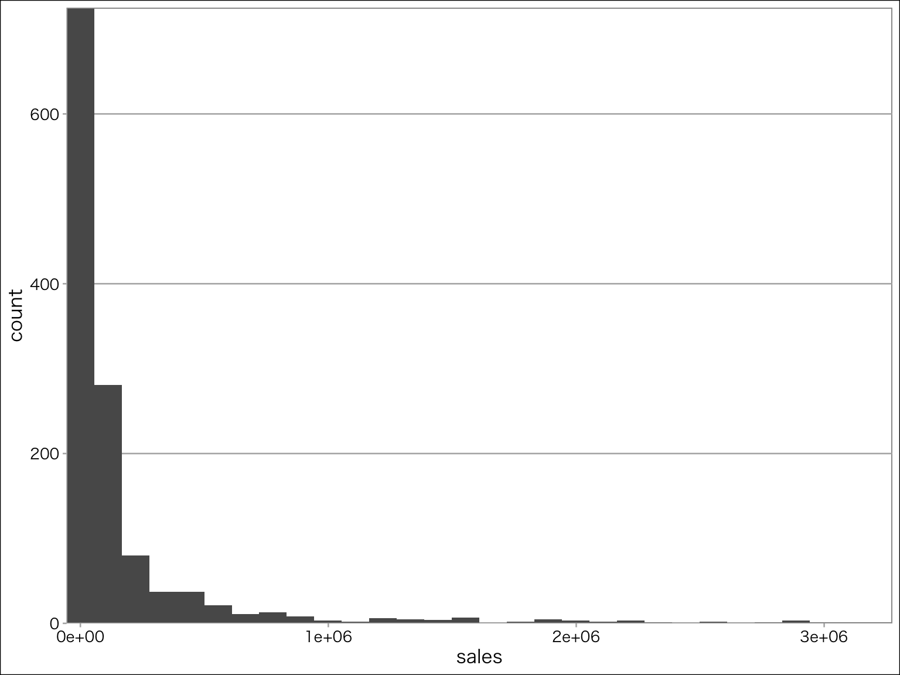
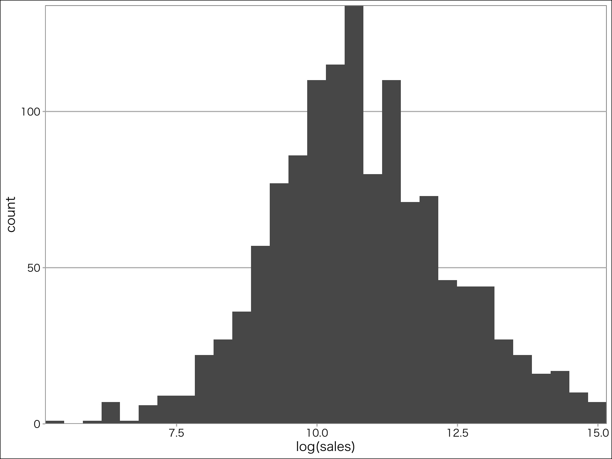
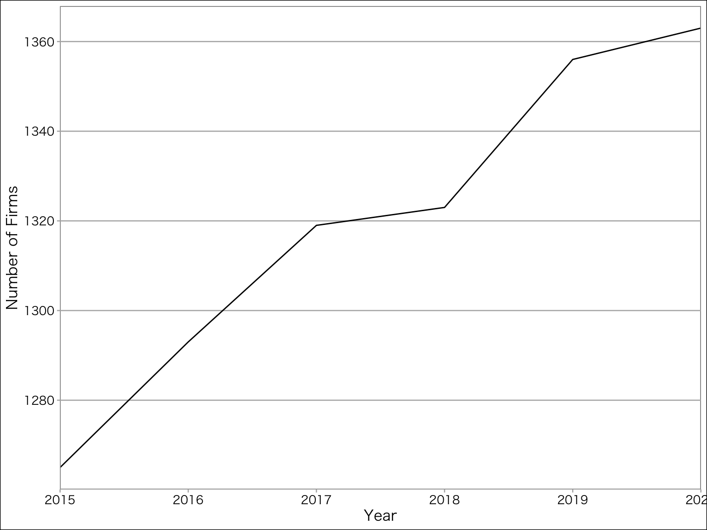
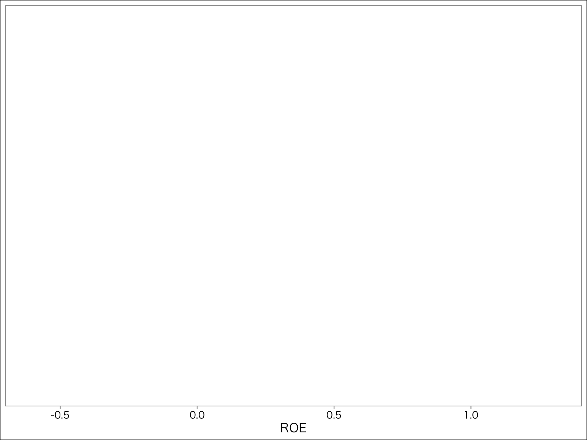
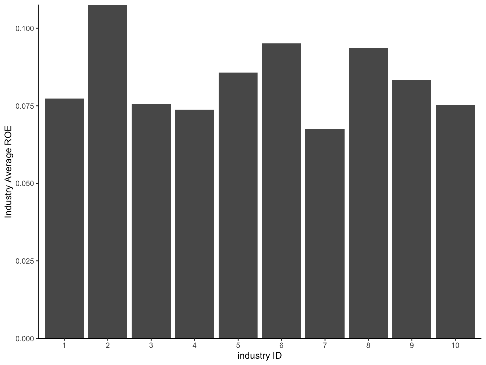
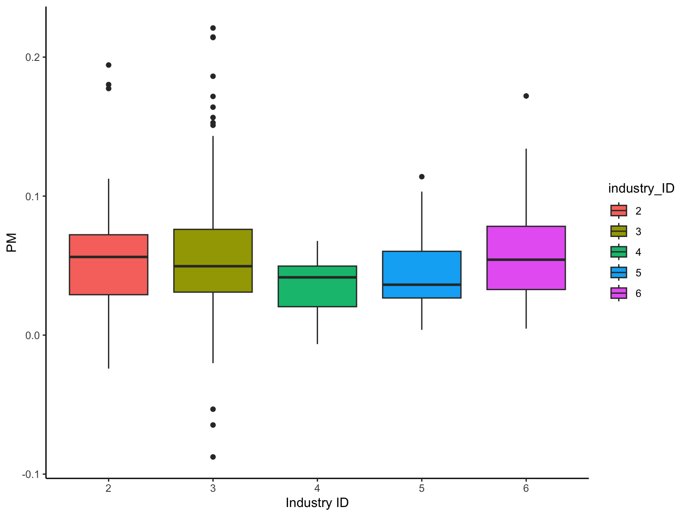
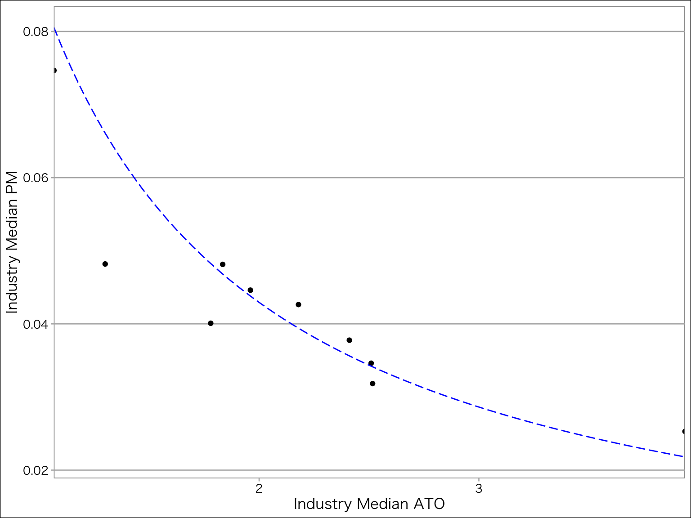

library(tidyverse)
library(ggthemes)
library(ggpubr)
library(plotly)
library(patchwork)
mystyle <- list (# ggplotのテーマ
theme_calc(), # ggthemesパッケージ
scale_colour_calc(), # ggthemesパッケージ
theme(
text = element_text(
size=12, # フォントサイズ
family = "HiraKakuProN-W3" # ヒラギノフォント
)
),
# scale_y_continuous(expand = c(0,0)),
scale_x_continuous(expand = c(0,0))
)第4章 財務データの取得と可視化
ディスクロージャー制度の概要とデータの入手先
4.1.1 法定開示と適時開示
| 年次開示 | 四半期開示 | 重要事実 | |
|---|---|---|---|
| 法定開示 | 有価証券報告書 | 四半期報告書 | 臨時報告書 |
| 適時開示 | 決算短信 | 四半期決算短信 | 適時開示 |
4.1.2 財務データの入手先
- EDINET：金融庁が運営する電子開示システムで，全上場企業の法定開示資料をデータベースとして提供
- TDnet：東京証券取引所が運営する電子開示システムで，上場企業の決算短信をデータベースとして提供
XBRL(eXtensible Business Reporting Language)形式で財務諸表などの主要情報を公開している。XBRLからデータを読み込むスキルは本書の枠を超えるため，ここでは与えられたデータで分析する。
4.2 Rを利用した財務データの分析
4.2.1 tidyverseパッケージの概要
tidyverseとは，R神Wickham氏が基本コンセプトを設定し，tidyデータに対して一貫した記法でデータを扱えるパッケージ群である。インストールと読み込みは以下の通り。
#install.packages("tidyverse") # 初回だけ
library(tidyverse) # 毎回読み込み。めんどくさいときは.Rprofileに書き込むtidyverseパッケージを読み込むことで，次の代表的なパッケージが読み出される。
- ggplot2 データの可視化 めっちゃ使う
- dplyr データハンドリング めっちゃ使う
- tidyr tidyデータにもっていく 使う
- readr データを読み込む めっちゃ使う
- purrr 関数型プログラミングで使う 慣れてくると使う
- tibble data.frameではなくtibbleにする あまり使わない
- stringr 文字列の加工・操作 ちょいちょい使う
- forcats ファクター型変数の操作 そんなに使わない
4.2.2 財務データの読み込み
サポートサイトにある練習用のデータセットch04_financial_data.csvをダウンロードして，作業ディレクトリに置いておく。作業ディレクトリの場所を確認するにはgetwd()を使う。作業ディレクトリを変更するときは，setwd()でパスを指定する。データを読み込むためには，基本関数のread.csv(”hoge.csv”)を使うが，より高速かつオプション指定が柔軟なtidyverse関数群の１つであるread_csv(”hoge.csv”)をつかう。似てるので気をつける。
financial_data <- read_csv("ch04_financial_data.csv") # readrを使用
nrow(financial_data) # 行数[1] 7920head(financial_data,5) # 最初の5行# A tibble: 5 × 11
year firm_ID industry_ID sales OX NFE X OA FA OL FO
<dbl> <dbl> <dbl> <dbl> <dbl> <dbl> <dbl> <dbl> <dbl> <dbl> <dbl>
1 2015 1 1 5261. 437. NA 287. 13006. 3543. 4373. 2481.
2 2016 1 1 5949. 564. 50.7 513. 13866. 4642. 4534. 3960.
3 2017 1 1 6505. 691. 29.5 662. 13953. 7744. 5111. 6159.
4 2018 1 1 6846. 751. 86.5 665. 18818. 7285. 5137. 10124.
5 2019 1 1 7572. 959. 298. 660. 18190 9735. 5488. 11362.readrパッケージのread_csv()関数は，
- データの読み込みが高速かつ型の推論が柔軟
- 基本のdata.frameではなく，その拡張版であるtibbleで返す
- 列名を勝手に変換しない。
- 文字列を勝手にファクター型にしない（
read.csv()だと勝手にファクターになる)。
という利点がある。 read_csv()で読み込んだデータセットのうち，financial_dataの中にはfirm_IDとindustry_IDというカテゴリーを表す変数があり，character型として読み込まれている。これを明示的にfactor型に変換するには，as.factor()を使う。
データの型や種類を確認するための方法として，class()とかstr()を使う。
# firm_IDとindustry_IDをfactor型に変換
financial_data$firm_ID <- as.factor(financial_data$firm_ID)
financial_data$industry_ID <- as.factor(financial_data$industry_ID)
# 確認
class(financial_data$firm_ID)[1] "factor"class(financial_data$industry_ID)[1] "factor"4.3 探索的データ分析
4.3.1 データセットの概要確認
データセットを操作するまえに，データの概要を大まかにつかむ必要があり，この作業を探索的データ分析(exploratory data analysis)という。仮説などを持たず，とりあえず特徴や構造を理解するための方法である。さまざまな記述統計量を返すsummary()を使う。
summary(financial_data) year firm_ID industry_ID sales
Min. :2015 1 : 6 3 :1760 Min. : 205
1st Qu.:2016 2 : 6 10 :1702 1st Qu.: 16103
Median :2018 3 : 6 7 :1334 Median : 40431
Mean :2018 4 : 6 1 :1143 Mean : 166007
3rd Qu.:2019 5 : 6 9 : 667 3rd Qu.: 118314
Max. :2020 7 : 6 8 : 429 Max. :3496433
(Other):7884 (Other): 885
OX NFE X OA
Min. :-353606.7 Min. :-285383.9 Min. :-357624.8 Min. : 217
1st Qu.: 399.3 1st Qu.: -66.4 1st Qu.: 383.3 1st Qu.: 12560
Median : 1602.9 Median : -1.2 Median : 1586.1 Median : 30799
Mean : 7968.9 Mean : 64.0 Mean : 7904.9 Mean : 152273
3rd Qu.: 5260.5 3rd Qu.: 41.4 3rd Qu.: 5204.6 3rd Qu.: 93469
Max. : 398034.5 Max. : 331035.3 Max. : 572588.7 Max. :7987936
NA's :1
FA OL FO
Min. : 288 Min. : 35 Min. : 44
1st Qu.: 6835 1st Qu.: 3965 1st Qu.: 3757
Median : 19095 Median : 10868 Median : 11125
Mean : 80185 Mean : 50261 Mean : 70681
3rd Qu.: 52118 3rd Qu.: 33111 3rd Qu.: 35446
Max. :29250611 Max. :2817975 Max. :7026924
さらに，データセットのある変数に含まれる固有な要素を抽出するには，unique()関数を用いる。
unique(financial_data$year) # financial_dataのyear変数に含まれる固有要素[1] 2015 2016 2017 2018 2019 2020# 2015, 2016, 2017, 2018, 2019, 2020固有要素の数を確認するには，unique()関数で取り出した要素の数をlength()関数で返す。 企業-年の企業数と年度数を確認するには次のようにする。
length(unique(financial_data$firm_ID)) # 1515を返す[1] 1515length(unique(financial_data$industry_ID)) # 10[1] 10よってこのデータには10産業に属する1515企業があることが分かる。
4.3.2 欠損データの処理
ほとんどのデータセットには，欠損値(NA)が含まれているため，この欠損値の処理は重要である。欠損値を確認するためには，complete.cases()関数を用いるのが便利である。欠損値が含まれているとFALSEを返し，欠損値がないとTRUEを返す。
head(complete.cases(financial_data)) # 最初の６行の結果を表示[1] FALSE TRUE TRUE TRUE TRUE TRUEsum()関数で，TRUEの個数を数え上げるのも便利
sum(complete.cases(financial_data)) # TRUE/FALSEを1/0に置き換えて合計[1] 7919欠損値の出現に何らかの傾向がある場合，欠損値の削除が生存者バイアス(survivorship bias)をもたらす可能性がある。たとえば，過去10年間にわたって連結財務諸表データに欠損値が含まれていない上場企業ばかりを分析すると，途中で倒産したり上場したりした企業は削除され，10年間経営し続けている優良企業しかデータに残らない生存者バイアスが発生する。
このようなバイアスを考慮しなくても良いなら，欠損値をもつ個体(unit)のデータ(行)を削除するのが単純な処理である。このとき，tidyrパッケージに含まれるdrop_na()関数を用いる。基本関数のna.omit()もあるが，drop_na()の方がオプションが豊富なのでおすすめ。
nrow(drop_na(financial_data)) # 欠損行を削除した場合の行数[1] 7919financial_data <- drop_na(financial_data) # 欠損行を削除した上でデータを上書き
# この作業には注意が必要である。オリジナルデータはそのまま残しておいたほうが良い気がする。欠損値を含む行を削除するのではなく，欠損値に適切な推定値を代入することでサンプルサイズを減らさない方法も開発されているが，欠損値の出現を説明する確率モデルを仮定し，その推定値を求める必要がある。
4.4 データの抽出とヒストグラムによる可視化
4.4.1 条件にあうデータの抽出方法
教科書では複数の方法が紹介されているが，このメモではtidyverseパッケージを用いた方法だけ取り上げる。具体的には，データベース操作のパッケージであるdplyrの中のfileter()関数を使う。さらにmagrittrを用いたパイプ演算子%>%を用いたデータの受け渡しの記法を活用して，可読性の高いソースコードを書く。
financial_data_2015 <- financial_data %>%
dplyr::filter(year == 2015) # year変数が2015のデータを抽出 dplyr::fileter()で条件を満たすデータのみを取り出し，それをfinancial_data_2015に代入している。
パイプ演算子%>%は左のオブジェクトを右の関数の第1引数に代入する，という処理を行う。つまり，x %>% filter(year == 2015)は，filter(x, year == 2015)と同じ意味である。パイプ演算子を使うことで，データが次の処理に受け渡されていくプロセスが読みやすくなる。少し先取りだが，たとえば，
- 欠損値を除去して，
- 2015年のデータを抽出し，
- ROEを計算して，
- 産業ごとに平均値を出す
という処理を行いたい場合，次のように書ける。
financial_data %>%
drop_na() %>% # 欠損値を除去し，
filter(year == 2015) %>% # 2015年のデータを抽出し，
mutate(ROE = earnings / equity) %>% # ROEを計算し，
group_by(industry) %>% # 業種コードごとに
summarise(mean_ROE = mean(ROE)) # mean()で平均値を計算4.4.2 ヒストグラムによる売上高の可視化
ヒストグラムを書くためには，基本関数のhist()が最も簡単だが，より高性能なggplot2を用いたヒストグラムの書き方を学ぶ。
g <- ggplot(data = financial_data_2015) + # データの指定
aes(x = sales) + # 変数の指定
geom_histogram() + # グラフはヒストグラム
scale_y_continuous(expand = c(0,0)) + # 余計な余白を除去
mystyle # グラフのスタイルをclassicに設定
print(g)
ここで，Rstudioのコンソールに，
stat_bin()usingbins = 30. Pick better value withbinwidth.
というメッセージが出る。これは「何も指定されなかったので，ヒストグラムのビンの数を30にして作図したけど，オプションのstat_bin()で適切な区間幅をbinwidthで設定してね」ということである。
x軸が指数表記となっていて見づらいので，scales()関数を使う。さらに，売上高を自然対数に変換して，分布の歪みを修整したヒストグラムを書く。
g <- ggplot(financial_data_2015) +
aes(x = log(sales)) +
geom_histogram() +
scale_y_continuous(expand=c(0,0)) +
scale_x_continuous(label = scales::label_comma()) + # 3桁ごとにコンマで区切った数値で表示
mystyle
print(g)
4.5 データの集計と折れ線グラフによる可視化
4.5.3 dplyrを用いた集計
ここもtidyverseのdplyrを用いたソースコードの書き方をみていく。
N_firms_by_year <- financial_data %>%
group_by(year) %>% # 年度ごとにグループ化
summarize(
N_firms = n(), # データ個数 n()
mean_sales = mean(sales) # 売上高の年度平均
) 4.5.4 折れ線グラフによる上場企業数の可視化
データの成形が終わったので，作図する。x軸を年度year，y軸を上場企業数N_firmsとする折れ線グラフを作る。ggplot2ではgeom_line()で折れ線グラフを作る。
g <- ggplot(N_firms_by_year) +
aes(x = year, y = N_firms) +
geom_line()
g <- g + labs(x = "Year", y = "Number of Firms") # 軸ラベル
g <- g + mystyle # グラフの見た目
print(g)
4.6 変数の作成とヒストグラムによる可視化
tidyverseのdplyrのmutate()関数を用いれば，パイプ演算子を用いて可読性の高いシンプルなソースが書ける。
ここでは，ROEを計算する。ROEの定義は，
ROE_t = \frac{X_t}{BE_{t-1}}
分子のX_tはt期の当期純利益，分母のBE_{t-1}はt期首の株主資本である。練習用データであるfinancial_date.csvには，当期純利益はXという列名で含まれているが，株主資本はない。データから株主資本は次のように計算できる。
BE_t = \underbrace{(OA_t - OL_t)}_{NOA_t} - \underbrace{(FO_t - FA_t)}_{NFO_t}
この計算を行い，新しい変数BEとしてデータセットに加えるには，dplyr::mutate()を使う。最初のfinancial_data < - financial_data で新しい変数を既存のデータセットに追加している。また，%<>%でも同じことができる。
financial_data <- financial_data %>%
mutate(
BE = (OA - OL) - (FO - FA) # 新たなBE変数が加わる
)分母の株主資本は期首，つまり前期末の数値を用いる必要がある。1期前の値を参照するには，lab()関数を用いる。ただ，クロスセクションのデータで普通にlag()関数を用いると，次のように別の企業のデータを参照してしまう。

上の例だと企業2の2015年の当期純利益を1期前の純資産で割る必要があるが，1期前の純資産は手元のデータにないので，ROEを計算できない。このように，ROEを企業ごとに計算するために，dplyr::group_by()を使って，計算を企業群ごとに行う。
financial_data <- financial_data %>%
group_by(firm_ID) %>% # firm_IDごとに以下の処理を繰り返す
mutate(
lagged_BE = lag(BE), # lag関数で前期の値を取り出す
ROE = X / lag(BE) # これで一気に計算する方がOK
) %>%
ungroup() # group化を解除これでROEの計算ができた。ヒストグラムを作ってみる。
g <- ggplot(financial_data) + # データの選択
aes(ROE) + # 変数を選択 ヒストグラムは1変数のグラフだから1つだけ変数を選ぶ
scale_x_continuous(limits = c(-0.1, 0.5)) + # x軸は-0.1から0.5の間
scale_y_continuous(expand = c(0,0)) + # y軸を0スタート
mystyle # テーマを選択
print(g)
4.7 グループごとの集計とランク付け
4.7.1 産業ごとのROE平均値と棒グラフによる可視化
グループごとに平均値を出すといった処理は，dplyrのgroup_by()とsummarise()を用いることで簡単にできる。
financial_data %>%
group_by(industry_ID) %>% # 集計したいグループを指定
summarize(
mean_ROE = mean(ROE, na.rm = TRUE)
) # A tibble: 10 × 2
industry_ID mean_ROE
<fct> <dbl>
1 1 0.0773
2 2 0.108
3 3 0.0755
4 4 0.0737
5 5 0.0857
6 6 0.0951
7 7 0.0676
8 8 0.0937
9 9 0.0834
10 10 0.0753平均値を返すmean()関数は，引数のベクトルの中に欠損値があると欠損値NAを返す。それを回避するためには，mean()関数のオプションna.rm = TRUEを指定して，欠損値を無視するよう支持する。na.rmはNA(欠損値)をRM(リムーブ)する，という意味である。これで産業別のROE平均をグラフ化できる。
# データ操作
df_mean <- financial_data %>%
group_by(industry_ID) %>% # 産業別に
summarize(
mean_ROE = mean(ROE, na.rm = TRUE) # 平均ROE
)
# 作図
ggplot(df_mean) + # データフレームを指定
aes(x = industry_ID, y = mean_ROE) + # 変数を2つ指定
geom_col() + # 棒グラフ geom_bar()もあるけどこっち
labs(x = "industry ID", y = "Industry Average ROE") + # ラベル設定
scale_y_continuous(expand = c(0,0)) + # グラフの原点0,0に設定
theme_classic() # テーマを設定
教科書では，パイプ処理で直接ggplot()にデータフレームを渡しているが，個人的に可読性が低くなりオススメできないので，上の例ではデータ操作と作図を分けて書いた。
ROE_rank_data <- financial_data %>%
filter(year == 2020) %>% # 2020年度データを抽出
select(firm_ID, industry_ID, ROE) %>% # 必要な変数を選択
group_by(industry_ID) %>% # 産業コードごとに以下の処理を実行
mutate(
ROE_rank = rank(desc(ROE)) # ROE_rank変数を降順で作成
) %>%
ungroup()# グループ化を解除
ROE_rank_data %>%
filter(ROE_rank == 1) %>% # 各産業のランク1のものを抽出
arrange(industry_ID, ROE_rank) # データを昇順で並び替え# A tibble: 10 × 4
firm_ID industry_ID ROE ROE_rank
<fct> <fct> <dbl> <dbl>
1 8 1 0.388 1
2 242 2 0.375 1
3 475 3 0.498 1
4 619 4 0.149 1
5 661 5 0.267 1
6 719 6 0.142 1
7 929 7 0.564 1
8 1042 8 0.256 1
9 1167 9 0.235 1
10 1380 10 0.250 14.8 上級デュポン・モデルによるROEの分析とその可視化
上級デュポン・モデルは，次のものである。
\begin{align*} ROE_t := \frac{X_t}{BE_{t-1}} &= \underbrace{\frac{OX_t}{NOA_{t-1}}}_{RNOA_t} + \underbrace{\frac{NFO_{t-1}}{BE_{t-1}}}_{FLEV_{t-1}} \times \left[ \frac{OX_t}{NOA_{t-1}} - \frac{NFE_t}{NFO_{t-1}} \right] \end{align*}
RNOA_tは，ATO_tとPM_tとに分割できる。
\underbrace{\frac{OX_t}{NOA_{t-1}}}_{RNOA_t} = \underbrace{\frac{sales_t}{NOA_{t-1}}}_{ATO_t} \times \underbrace{\frac{OX_t}{sales_t}}_{PM_t}
これをmutate()関数で計算して，新しい変数としてデータフレームに追加する。
financial_data_DuPont <- financial_data %>%
group_by(firm_ID) %>%
mutate(
NOA = OA - OL,
RNOA = OX / lag(NOA),
PM = OX / sales,
ATO = sales / lag(NOA),
NFO = FO - FA,
lagged_FLEV = lag(NFO) / lagged_BE,
NBC = NFE / lag(NFO),
ROE_DuPont = RNOA + lagged_FLEV * (RNOA - NBC)
) %>%
ungroup()ROEの分解式が合っているかどうかを確認するため，all.equal()関数を使って，第１引数と第２引数が等しいかどうかを判定する。
all.equal(financial_data_DuPont$ROE, financial_data_DuPont$ROE_DuPont) [1] "Mean relative difference: 4.396878e-06"4.8.2 箱ひげ図による産業別比較
ggplot2のgeom_boxplot()関数を用いることで，データフレームから箱ひげ図を作図できる。先に作成したデータフレームfinancial_data_DuPontを用いて作図する。
最終年度のデータに限定し，産業IDが2〜6までの企業のPMを箱ひげ図にする。
df_2020 <- financial_data_DuPont %>%
filter(
year == 2020, # 最終年度
industry_ID %in% 2:6 # 産業コードが2から6
)
g <- ggplot(df_2020) +
aes(x = industry_ID, y = PM, fill = industry_ID) + geom_boxplot() # 箱ひげ図
g <- g + labs(x = "Industry ID") + theme_classic() # ラベルとスタイル
print(g)
4.8.3 散布図による産業別比較
産業ごとに ATO(純事業資産回転率)と PM(売上高事業 利益率)がどう分布しているか散布図を書く。散布図から反比例の関係が見れるので，y = f(x) = a/xを図に書き込んでみる。関数をグラフとして図に追加するためにstat_function()関数を用いる。
以下では，産業ごとにPMの中央値を計算し，それをdata.frameとしてdfに代入している。
median_RNOA <- median(financial_data_DuPont$RNOA, na.rm = TRUE) # RNOAの中央値
df <- financial_data_DuPont %>%
group_by(industry_ID) %>%
summarise(
industry_median_PM = median(PM, na.rm=TRUE),
industry_median_ATO = median(ATO, na.rm=TRUE)
)
g <- ggplot(df) + geom_point(aes(x = industry_median_ATO, y = industry_median_PM)) # 散布図
g <- g + labs(x = "Industry Median ATO", y = "Industry Median PM") + mystyle# 軸ラベルとスタイル
g <- g + stat_function(fun = function(x) median_RNOA / x, linetype = "longdash", color = "blue") # 反比例の関数を追加
print(g)